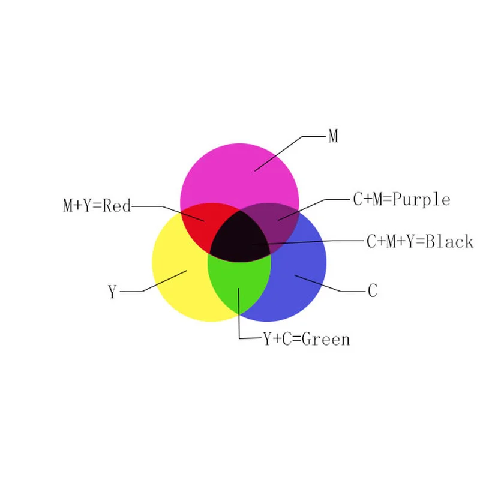

Kleurmodellen zijn een van de belangrijkste dingen van een pagina want het zorgt er voor dat niet alles dat je doet dezelfde kleur heeft maar dat je juist mooie kleuren kan toevoegen met een enorme variatie zoals je aan de titel kan zien. En dit is pas maar het topje van de ijsberg van kleuren. Er zijn zoveel verschillende kleuren die je kan maken. Hoe je die kleuren maakt via een kleurmodel zal ik je op deze pagina uitleggen.
Het eerste model waar ik het over ga hebben is RGB. RGB staat voor red, green en blue. Met deze drie kleuren kan je wel 16777216 combinaties maken. Dit komt omdat het RGB model zo werkt dat je aangeeft hoeveel rood, groen of blauw het moet zijn. De computer kan het echter in procenten doen dus hebben ze getallen gekozen. Van 0 tot en met 255 dus per kleur heb je 256 opties. Als je kijkt naar de kleurvlakken hieronder zie je de drie kleuren. Rood is bijvoorbeeld gemaakt als (255, 0, 0). De 255 geldt voor rood dus vol rood en 0 groen en 0 blauw. Voor groen is het dus (0, 255, 0) en blauw (0, 0, 255). Maar hoe komt uiteindelijk die kleur die gemaakt is met RGB op je scherm? RGB is niet voor niets gekozen want op je scherm zitten allemaal kleine pixels. Dit zijn hele kleine stukjes op je scherm die je niet kan zien. Elke pixel heeft drie lampjes en zoals je wel kan aanzien zijn die rood, groen en blauw. Als dus de kleur bepaald is met RGB zal dus bij bijvoorbeeld rood het lampje rood volledig branden en groen en blauw helemaal niet. Als je al deze pixels die dus een bepaalde kleur maken door te variëren tussen hoe fel elk lampje in de pixel brand samenvoegt krijg je een mooi beeldscherm met allemaal verschillende kleuren.

Hier zie je die kleurvlakken rood, groen en blauw.
Je kan ook bij RGB juist alle lampjes helemaal aan of helemaal uit, dan krijg de zwart en wit. Bij (255, 255, 255) krijg je wit en bij (0, 0, 0) krijg je zwart. Zwart en wit zie je hieronder aangetoond met kleurvlakken.
RGB is een erg handig kleurmodel. Het enige probleem is dat de kleuren altijd op een zwarte achtergrond zitten, want als een pixel uit is, is het zwart. Dus als je iets wil printen komt het op een witte achtergrond en worden opeens de kleuren heel anders. Voor dit probleem hebben ze een nieuw kleur model uitgevonden genaamd CMY dat staan voor cyan, magenta en yellow. Er is alleen een klein probleem want met alleen deze kleuren kan je veel kleuren maken maar soms komt het er toch niet uit zoals het hoort. Dit komt omdat er niet genoeg zwart bij zit. Daarom hebben ze een variant op CMY gemaakt genaamd CMYK waar de k voor de k van black. Printers gebruiken dus vaak CMYK om alles goed op papier te zetten zoals je wilt.
Hier zie je die kleurvlakken cyaan, magenta en geel.
Allebei zijn het erg handige kleurmodellen. Ze hebben allebei zo zijn voordelen. RGB is beter voor een beeldscherm met pixel terwijl CMY juist voor printers handig is om kleuren te printen op een blad. Het grote verschil en ook de reden waarom er überhaupt twee verschillende kleurmodellen zijn is dat RGB zwart als achtergrond heeft terwijl CMY wit als achtergrond. Het zijn andere kleurmodellen maar dat betekent niet dat je niet dezelfde kleuren kan maken want je kan nog steeds veel kleuren maken bij allebei.
.png)
Als je het toch nog niet helemaal begrijpt, dan is hier nog een korte uitleg over RGB en CMYK.